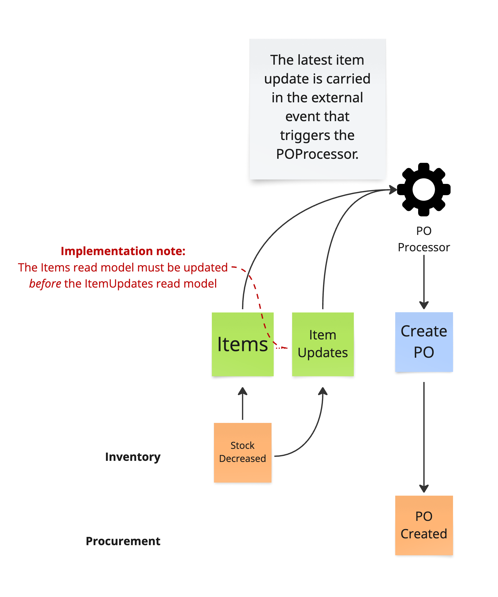

Read Model State Export
Let a read model export its current state via events to downstream consumers to avoid querying for possibly stale state.
Problem
In the flow depicted in figure 1 a StockDecreased event within the Inventory context updates two separate read models:
-
Items stores details of available items, including the current quantity for a given item.
-
ItemUpdates triggers automations via an external event when the quantity of an item changes. One such automation is the purchase order processor (POProcessor) which will invoke the Procurement capability to create an purchase order for an item if it needs to be restocked.
Figure 1 - A processor queries a read model upon consuming an external event
When the POProcessor - a component that resides within the boundary of the Procurement context - is triggered it will query the Items read model for item details, including the current quantity. However at the time the query is made there is no guarantee that Items has yet been updated to reflect the current quantity, thus possibly stale state causes the POProcessor to not execute the creation of a purchase order.
Solution
While the information flow is accurately modeled in figure 1 it does not resolve the eventual consistency issue that yields possibly stale results when the POProcessor queries the Items read model.
An alternative approach is to avoid the need to query ("pull") read model state at all and rather export ("push") the latest read model update as part of the external event payload that is the ItemUpdates trigger.
|
This pattern can be considered a specialization of the Import External State pattern. |
Two potential solutions are therefore:
-
Co-locate the Items and ItemUpdates read models at the implementation level.
In figure 2 the information flow remains the same, but an ordering on StockDecreased event processing is imposed to ensure that Items is updated before ItemUpdates. The external event will then be populated with the latest item details update and published.
Figure 2 - Co-locate read model updates
-
Introduce an internal processor (the ItemProcessor that is part of the Inventory context in figure 3) that facilitates an intermediate state transition to prepare an item update.

Figure 3 - Segregate read model updates via intermediate state transition
The advantage of this option is that rather than relying on an implementation detail - ordered event handling - the model itself guarantees that an item update always will carry the expected state.
The internal ItemProcessor could utilize a subscription query to listen for read model updates.
Example
The co-location solution is shown in listing 1.
@EventHandler
public void handle(StockDecreased evt) {
// Items read model.
//
// Update the current quantity of the item.
items.getItemDetails(evt.itemId()).decreaseQuantity();
// ItemUpdates read model.
//
// Populate and publish an external event - ItemUpdated - with
// item details, including updated current quantity.
eventGateway.publish(
new ItemUpdated(items.getItemDetails(evt.itemId))
);
}Listing 1 - Co-located and ordered event processing